Brand Identity
Octenso ｜ 八態能格
品牌識別系統 · 內部草案，依你提供的 logo 圖檔長成
01
主標誌 — 標準組合 Lockup
毛筆 enso（円相）＋幾何細無襯線字標，以細直線分隔中英；近正圓的「O」呼應 enso。這是對外的第一印象，優先使用此組合。

Octenso
八態能格
看見你的能量 選擇你的流動
See your energy. Shape your flow.
See your energy. Shape your flow.
enso ＝你提供的毛筆円相，已裁切去背為透明 PNG（
assets/enso.png，深色底用 enso-white.png）。日後要換更高解析或岩無真跡，只需替換這兩個檔，不動其餘系統。02
標誌變體 Variations
依場合選用。空間窄用「符號＋字標」橫式；社群頭像/favicon 用「純符號」；深色底用反白版。
純符號 enso · 頭像 / favicon
橫式精簡 · 頁首 / 導覽

Octenso反白 · 深色底 / 影片片頭
03
淨空與最小尺寸 Clear space
標誌四周至少保留「一個 enso 直徑」的淨空，不被文字或邊框逼近。最小使用寬度：橫式 lockup ≥ 180px、純符號 ≥ 28px。
Octenso
斜線區＝建議淨空（≈ 一個 enso）
04
色彩系統 Color
品牌以「墨＋紙」為主，極簡乾淨；五行能量色只在產品內承載語意（八能量、雷達、資料），不當品牌底色。松綠為主要行動/連結色。
品牌主色 Brand core — logo 與大面積
輔助 Accent — 行動・連結・點綴
能量色 Energy / 五行 — 僅產品內承載語意
05
字體 Typography
字標用幾何細無襯線（Jost，圓潤幾何、呼應 enso）；中文標題用襯線（思源宋體）求溫度；內文用無襯線（思源黑體）求清晰。
字標 WordmarkJost Thin 200
(Futura 系幾何無襯線)
(Futura 系幾何無襯線)
Octenso
中文標題 Heading思源宋體 SemiBold
看見你的能量
內文 Body思源黑體 Regular
能量會流動、可以成長；所有結果都是反思的起點，不是定論。
標籤 LabelJost · 字距放寬
See your energy
06
母題 Motif — 八卦・八角輪
八卦象與八角能量輪是品牌的圖形語彙；enso（整體/円相）與八卦（八種能量）一體兩面。圖形用色取「能量色」，背景維持墨紙。
☰ ☱
☲ ☴
☳ ☵
☶ ☷
乾 兌 ｜ 離 巽 ｜ 震 坎 ｜ 艮 坤 — 八種能量，循環流動
07
語氣 Voice & Tone
Octenso 是一面鏡子，不是算命。語氣克制、誠實、留白；描述而不判決。
該這樣
別這樣
08
標語 Tagline
看見你的能量 選擇你的流動
See your energy. Shape your flow.
哲學：能量會流動（易）＋你能選（「選」＝辶＋巽，巽＝風＝順流）→「看見，是為了能選」。
Octenso ｜ 八態能格 · 練息場 Join to Enjoy
CI 草案 v0.1 · 內部開發中 · 未公開
CI 草案 v0.1 · 內部開發中 · 未公開